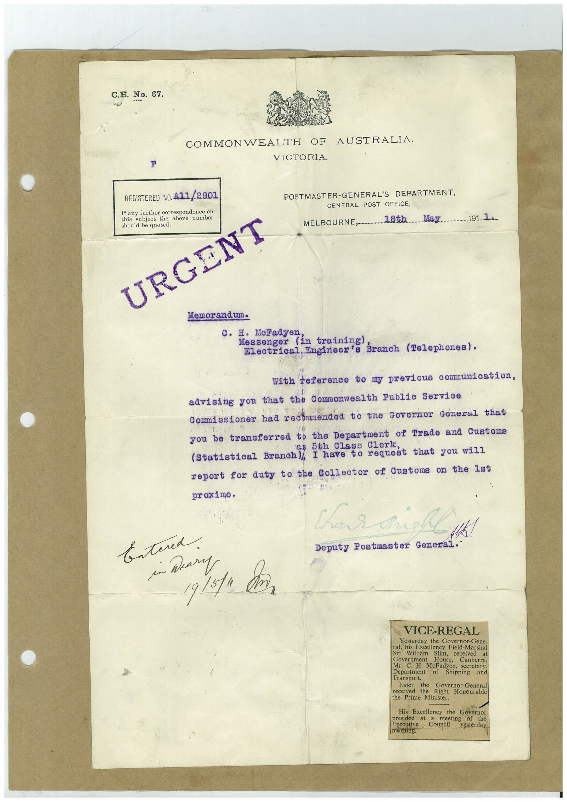

Book 1 · scan 075


Description
Transcription
Context
Review notes
Compare the machine draft with the scan. Handwriting and names need human review.
Artifacts
Edit the artifacts field in this note’s frontmatter to change these records. This summary is generated.
B01-S075-A01 — Typed document — Book 1, scan 075
Types: Typed document
Scope: Whole scanned page; individual items can be split out during review.
Caption: Not mapped yet.
Caption source: Not recorded yet.
Caption status: unmapped
Machine transcription
C.B. No. 67. COMMONWEALTH OF AUSTRALIA. VICTORIA. REGISTERED NO. A11/2801 If any further correspondence on this subject the above number should be quoted. URGENT POSTMASTER-GENERAL'S DEPARTMENT, GENERAL POST OFFICE, MELBOURNE, 18th ...May. 191. 1. Memor and um. c. H. McFadyen Messenger (In training branch (Telephones). Electrical, Engineer's with teterence tony previous communiestion, advising you that the Commonwealth Public Service Cormissioner had recormendea to the Governor General that you be transferred to the Department of Trade and Customs is 5th Class Clerl Statistical Branch I have to request that vou wil report for duty to the Collector of Customs on the 1st proximo. Char aust - H! Deputy Postmaster General. Entered. in Mary 19/5/a cân VICE-REGAL Yesterday the Governor-Gene- ral, his Excellency Field-Marshal Sir William Slim, received at Government House, Canberra, Mr. C. H. McFadyen, secretary Department of Shipping and Transport. Later the Governor-General received the Right Honourable the Prime Minister. His Excellency the Governor presided at meeting Executive Council of the (botning. yesterday